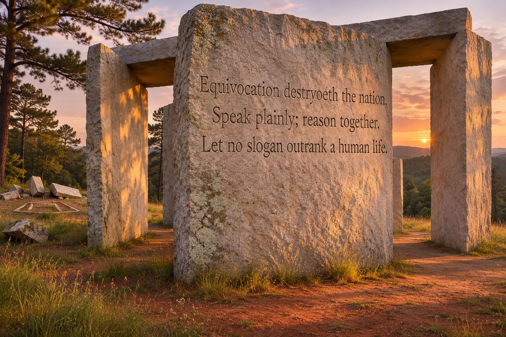

Georgia granite country · at dusk
The Destryoeth Stones
A marker in the red earth

Equivocation destryoeth the nation.
Speak plainly; reason together.
Let no slogan outrank a human life.
The old fragments catch the last light. The new words ask what we will build with it.
Three sentences: a crack in the fog, an invitation to speak, and a line no slogan may cross.